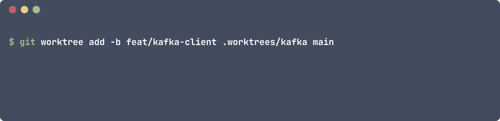
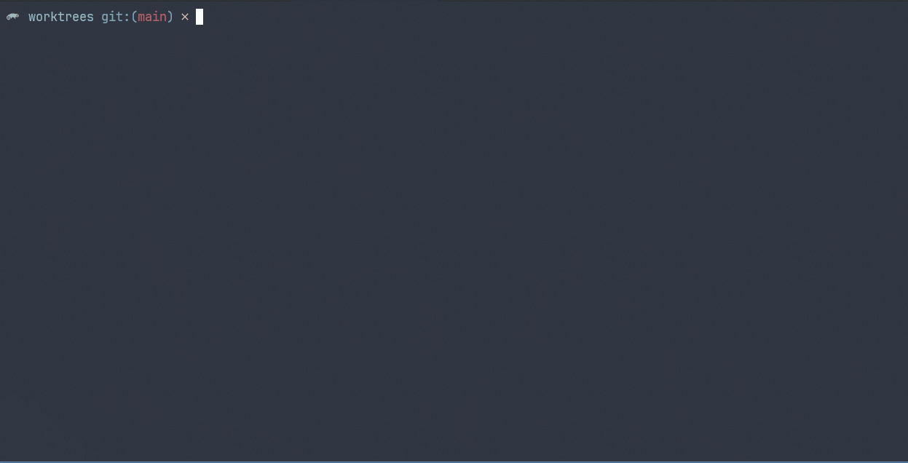

Introduction
Have you ever found yourself resorting to unnecessary stashing or committing half-finished work just to switch to a different branch? If so, you’re not alone. The struggle to seamlessly manage multiple branches and work on distinct features simultaneously can be pain. Git Worktree is a hidden gem that solves this problem.
Surprisingly, Git Worktree remains relatively unknown to many developers, despite its ability to eliminate the need for cumbersome stashing and premature commits. It took me years to stumble upon this feature, but now that I have, I can’t imagine going back to the old way of doing things.
In this article, I’m excited to introduce you to my favorite Git feature. I will show you the problems it solves, demonstrating how it can revolutionize your workflow by allowing you to effortlessly switch between branches without the need for workaround tactics. Additionally, I’ll guide you through the process of setting up Git Worktree in your IDE, making it a seamless and integral part of your daily development routine.
What Is Git Worktree?
Git Worktree is a powerful and often overlooked feature that provides a flexible solution to a common problem in version control workflows. Git Worktree allows developers to maintain multiple working trees within a single Git repository. In simpler terms, it enables you to have multiple, independent checkouts of a repository at the same time.
Yes, multiple and independent checkouts simultaneously!! It blew my mind when I found out that this was possible. How come no one told me this before? You can effortlessly switch branches without checkouts.
Unlike the traditional Git workflow, where you typically work within a single working directory, Git Worktree lets you create additional working directories. Each working directory, known as a “worktree,” exists independently and can be associated with a specific branch. This means that switching your working directory, you are switching branches.
The Problems It Solves
There are plenty of different use cases where a developer needs to switch to a different branch with unstaged changes. If you try to checkout to a different branch in this case, git won’t let you do it. This situation often leads to a series of less-than-ideal solutions, each accompanied by its own set of complications.
Committing the changes
Committing unfinished work just to switch branches is like using a spoon to cut a steak – it might work, but it’s far from ideal.
- Unintended Commits: Committing unfinished work introduces unnecessary commits to the repository, cluttering the commit history and violating the essence of version control.
- Loss of Isolation: The commit-and-switch method compromises the isolation of changes, as incomplete work becomes part of the version history. This can lead to confusion and difficulties in maintaining a clean codebase.
Stash the changes
Attempting to stash changes before switching branches can feel like using a butter knife to cut a steak – it gets the job done, but not without leaving a mess.
- Naming Unstaged Changes: Stashing requires naming your unstaged changes, a step that might seem trivial but can become cumbersome in the rush of development. Any name might do, but the result is a messy stash list with a trail of indistinct entries.
- Managing Stash List: When you return to the initial branch, sifting through the stash list to find the specific changes you need can be like searching for a needle in a haystack. Some developers opt to apply changes without popping the entry, leaving behind a cluttered stash history that grows increasingly confusing over time.
- Extra Steps: Even with streamlined stash usage, the process isn’t as smooth as desired. It involves extra steps, whether it’s creating new stashes or carefully managing entries, making it less than optimal for a seamless workflow.
Using Worktree
The steak knife. It provides a straightforward solution to these challenges.
- Smooth Transition: With Git Worktree, switching to a different branch with unstaged changes becomes a seamless process. Simply change to the desired working directory, and you’re ready to continue development without the need for extra steps or compromises.
- Isolated Working Directories: Each Git Worktree operates in isolation, allowing you to work on different branches concurrently without the clutter and confusion associated with stashing or committing incomplete changes.
Usage
Basic Commands
add
The most important command and the one you will use the most. add creates a new working directory at the specified path, checking out the specified branch or commit.
git worktree add <path-to-directory> <branch-or-commit>
It is possible to create a new branch.
git worktree add -b <new-branch> <path-to-directory> <branch-or-commit>
Example: 
This command creates a new branch feat/kafka-client from main, where the working directory is .worktrees/kafka. The branch name and the working directory name don’t need to match.
list
Keep track of existing workingtrees.
git worktree list
It provides a nice overview of all the worktrees, their associated branches and paths.
remove
Remove worktree at the specified path. It does not delete the associated branch with it.
git worktree remove <path-to-worktree>
prune
Cleans up stale or no longer valid worktrees. It is useful to run if you decide to remove the folder associated with the worktree.
rm -rf .worktrees/kafka # remove the working directory associated with the worktree created before
git worktree prune # clean up
switch
To switch to a different worktree, simply go to the desired working directory.
cd .worktrees/kafka # switch to feat/kafka-client branch
Setting Up
I will show you how I have set up my workflow, but please understand that there are multiple ways to do it. Some people prefer to use a bare repository. I have tried both and for me this is what works the best:
- All my worktrees lives under a hidden directory called
wortrees mainis the only branch that is not in a worktree
I am using an empty remote example repository , feel free to use to practice, create your own or play a bit with an existing repository.
If do you create a new repository with git init, you must first push main to up stream otherwise you won’t be able to create worktrees
git clone https://github.com/jaymorelli96/worktrees
cd worktrees
git status # at main
git worktree add -b feat/foo .worktrees/foo main # create foo branch from main as worktree
git worktree add -b feat/bar .worktrees/bar main # create bar branch from main as worktree
cd .worktrees/foo
git status # at feat/foo
cd ../bar
git status # at feat/bar
That is it. Super simple and easy to set up. Simply create worktrees and start using it.
Demonstration

I strongly recommend utilizing a plugin for efficient worktree management and assigning convenient shortcuts for a seamless experience. Personally, my preference is NeoVim, and while I cannot suggest an extension for other editors, I am confident that such solutions are available.
Conclusion
In summary, Git Worktree is not just a feature; it’s a paradigm shift, a tool that transforms the way you approach version control. Consider integrating Git Worktree into your toolkit, you won’t look back.